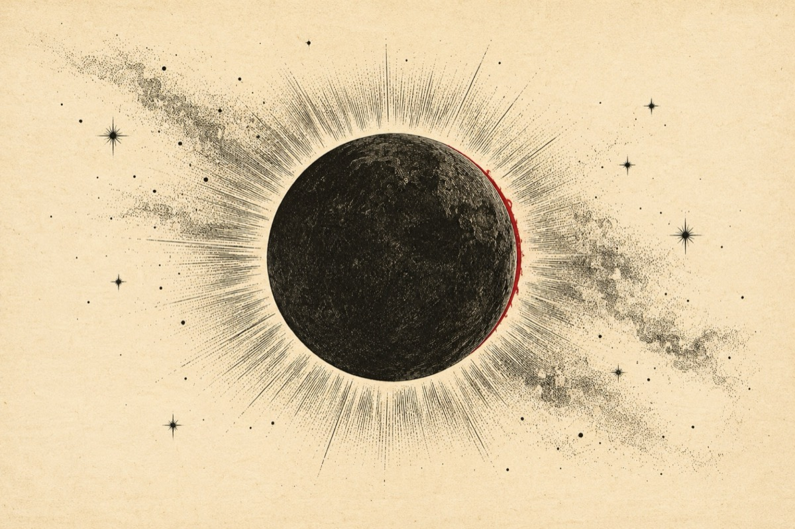

Eclipsă totală
Astăzi dimineață la 11:55 este eclipsă de soare. Este însă si superlună si echinocțiu de primăvară. Trei evenimente astronomice. O frumoasă coincidența cosmica. Se cuvine sa dedicăm o poezie.
Într-o fază de eclipsă
Când Pământul era lipsă
Din sistemul lui solar
Nefiind trecut pe listă
Sau cumva în calendar
Rămânând total în beznă
Fără nici un felinar
Doar o umbră printre stele
Și-ntre stele-o umbră doar!
Aștrii s-au luat la harță
Neprimind nici o povață
Cum că nu mai au în față
Cer albastru de oceane
Pentru a-și privi făptura
În oglinda sclipitoare
Și-au sărit cu toți pe Lună
Acuzând-o că-i nebună
Ziua în amiaza mare
Să se-așeze de-a-n picioare
Chiar între pământ și soare?
Năvălind cu mic cu mare
Și vestiții fii de soare
Cu-a lor raze sclipitoare
Într-un fel porniți în luptă
Chiar pe partea nevăzută
Unde Luna ca-n cetate
Are-a ei intimitate
Acolo-și păstrează farduri
Mirodenii și smaralduri
Cu care se-mpodobește
Când pământul îl privește
Acolo-și așează somnul
Când sfârșește maratonul
Petrecut noapte de noapte
Mai departe mai aproape
Mai pe nou, mai pe senin
Mai cu haz, mai cu suspin.
Sau atunci în luna nouă
Când se-mparte pe din două
Și-atunci când e luna plină
Ține-n partea nevăzută
O comoară cu lumină!
Ba Luceafărul celestu
Prietenul lui Eminescu
Și a Lunei bun amic
S-a cam supărat un pic
Că Pământul este-n noapte
Fără de amor și șoapte
Fără-ndrăgostiții ei
Colo-n banca de sub tei
Și că raza lui divină
Înapoi nu poa’ să vină
Fără lună fără soare
Făr-a luciului din apa
Vieților Măriei sale!
Locuind pe-a sa orbită
Luna s-a cam dat bătută
Privind spre Pământ și Soare
A-nțeles că stă în cale
Și încet, încet, încet
Să nu-și strice vreun ,,rulment’’
S-a rostogolit din cale
Lăsând razele de soare
Să ajungă pe pământ
Fâlfâind și strălucind
Răscolind păduri și ape
Văgăuni întunecate
Și însuflețind tot cerul
Dezlegând întreg misterul!
Vasile Groza